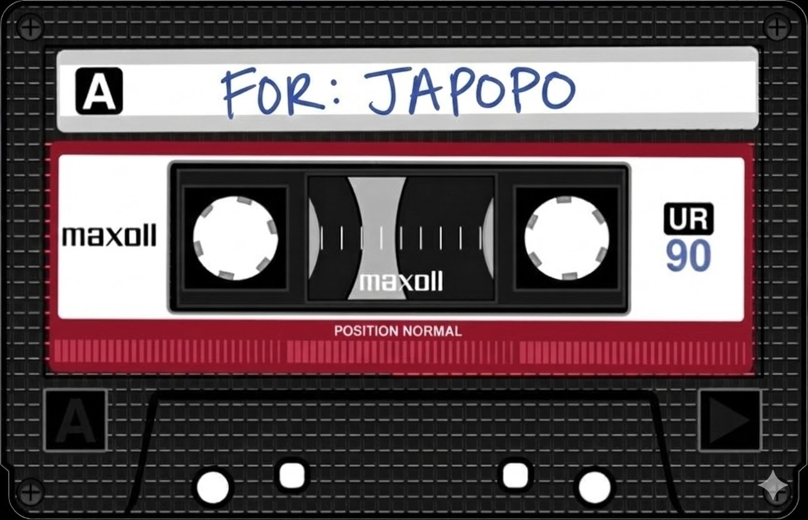

I've always wanted to write you a letter, the kind you can hold in your hands and keep forever. I debated sending this by post just so you could touch the paper I've held, but I don't think you'll receive it on time and I honestly couldn't wait another second to tell you these things. I wanted to make today a little more special, just for us.
The truth is, I'd spent a long time convincing myself that a love like this wasn't meant for me. After the heartaches I've been through, I had quietly accepted a life without it. But then I met you, and I realized that the world has a funny way of bringing you exactly what you need the moment you stop looking.
You were the very first person I saw on that app. When you were recommended to me, I didn't plan on messaging you at all. To be honest, you looked like the type of guy who wouldn't even talk to a girl like me, so I was genuinely surprised when you reached out first. I loved every second of those early days, hearing your stories and learning about your side of the world. I even remember rooting for you back then, truly wishing for your happiness before I even realized I wanted to be the one giving it to you.
Then came the flirting. I laughed it off as "just jokes" at first because there was no way in hell that I would believe they were real. Even when you teased me about asking for your socials, I stayed in my private little bubble because I've never cared about "flaunting" a life online. I just wanted to live a real life, a private life, and now, I want to live it with you.
Sometimes I still catch myself wondering, "Why me?" Out of all the people in the world you could have chosen, you chose me. It's a thought that humbles me and makes me feel so incredibly lucky. I know I've been scared. I know I've tried to run because the thought of being abandoned again is terrifying. But being with you has taught me that loving someone is worth the risk. It's knowing that while I could lose you, I'd rather open my heart completely than live a day without having known you. So, I'm choosing to be happy. I'm choosing to trust you with all of me. I'm giving you my heart, even knowing you have the power to break it.
The way you love me is so beautifully overwhelming. I've never known a person who could see me as clearly as you do. You have this incredible way of knowing what I need before I even have a name for it. When you hear that tiny shift in my mood and ask what's wrong before I can even find the courage to speak, that is where I fall for you all over again. I've never wanted to be "spoiled." I just wanted to be seen. And in your presence, I feel comfortable, safe, and seen.
Songs that remind me of you:
I love the way your voice softens when you talk to me. I love those sweet, quiet seconds where we sit in silence together, only to blurt out our thoughts at the exact same time. I want to love you properly, with everything I have. Even though long distance is a challenge, I know that life is far too short not to experience the person you love. I want to be with you in person. I want to spend my days learning about your comfort, knowing exactly which juice you'll pick because you hate the taste of water, or which songs you need to hear when the world gets too loud. I want to know the scent of the vape flavors you've used for years, the memories that make you wince, and the ones that make you feel alive. I want to know every mundane, unglamorous, beautiful piece of who you are.
I'm choosing you as my person, because the world is full of people who might share your traits, or speak the way you do, but somehow, none of them are you. Once I've known you, and once I've loved you, how could it be ever be anyone else?
I love you, my Juan.
Sincerely yours,